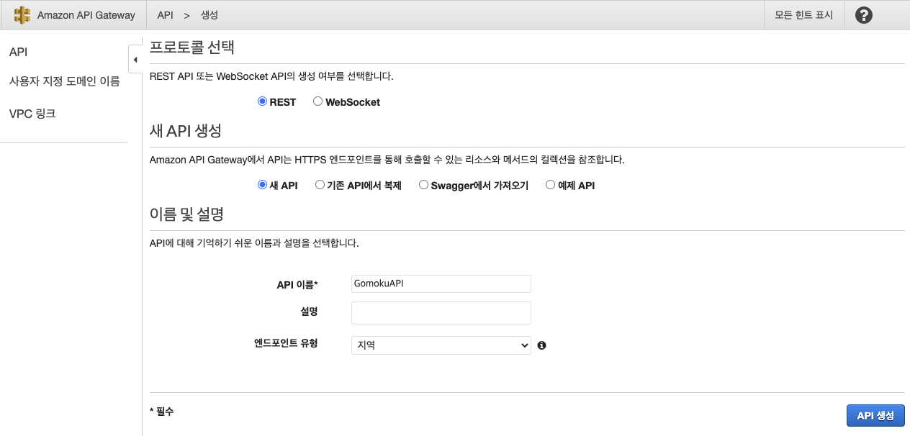

API Gateway 구성하기
CloudFormation 스택을 배포하셨다면, 이미 Lambda 함수와 API Gateway 의 기본 틀은 마련되어 있습니다. 단계를 진행해보시면서 필요한 부분만 채워주시면 됩니다.
API Gateway 구성하기
우리의 Lambda 함수 중 한가지가 API Gateway를 필요로 한다는 것을 알고 있습니다. REST API, HTTP API, WebSocket API 에 대한 엔드포인트로 API 캐싱이나 스로틀링과 같은 다양한 기능과 운영에 있어서 이점을 제공합니다. 이것은 개발 중의 애플리케이션의 Lambda 함수를 실행할 일종의 “Gateway” 역할을 하기 때문에 API Gateway라 이름이 붙여졌으며, 본 실습에서 API Gateway 는 Lambda 를 위한 API 엔드포인트의 역할을 수행합니다.
-
우선 콘솔에서 API Gateway 메뉴로 이동합니다. (https://console.aws.amazon.com/apigateway)
-
Create API를 선택하고, API name은 GomokuAPI 를 입력한 뒤 Create API 버튼을 클릭합니다

-
API가 생성된 뒤에는 빈 화면이 나타납니다. 우선 Resource 를 만들고 그 Resource 에 Method 를 생성합니다.
Actions 버튼을 클릭하고 Resource 를 만듭니다. -
아래와 같이 Resource Name에 ranking을 입력하고 Enable API Gateway CORS를 선택합니다. Create Resource를 클릭합니다.

-
다음은 새로운 Method를 생성하는 것입니다. Actions 버튼을 클릭한 뒤 Create Method 메뉴를 선택합니다. 아래 작은 리스트박스가 보일 것입니다. GET을 선택한 뒤 옆의 체크 버튼을 클릭합니다.
-
GET 메소드의 상세 설정에서 Integration type은 Lambda Function을 선택하고 Lambda Region에 실습을 진행 중인 Region을 선택합니다. Lambda Function에는 앞서 생성한 game-rank-reader를 선택한 뒤 Save 버튼을 클릭합니다.

-
API 구성이 되었습니다. 이제 prod 단계에 배포를 해보겠습니다. Actions 버튼을 클릭하고 Deploy API 메뉴를 클릭합니다.
-
[New Stage] 를 선택하고 Stage name에는 prod를 입력합니다. Deploy 버튼을 클릭하여 진행합니다.

- 완료되면 다음 스크린 캡처와 같이 Stage 구성이 된 것을 확인할 수 있습니다. Prod 배포의 /ranking 메뉴 하단의 GET을 선택하면 나오는 Invoke URL을 기록해둡니다.
다음 단원에서 S3 를 이용한 정적 웹페이지 구성에 사용됩니다.

이제 S3가 호스팅하는 웹 사이트를 생성할 것입니다. 버킷에 Ranking board html파일과 Javascript 파일을 업로드하는 것만으로 쉽게 웹 사이트를 호스팅할 수 있습니다.